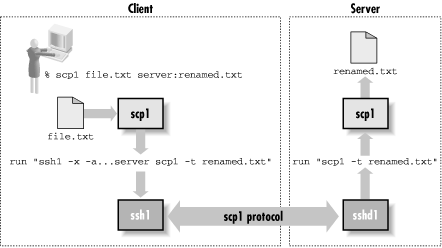
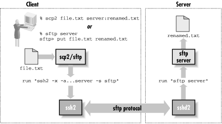

3.8. SSH and File Transfers (scp and sftp)
The first thing to understand about
SSH and file transfers, is that SSH doesn't do file transfers.
Ahem.
Now that we have your attention, what can we possibly mean by that?
After all, there are entire sections of this book dedicated to
explaining how to use
scp1,
scp2, and
sftp for file
transfers. What we mean is that there is nothing in the SSH protocol
about transferring files: an SSH speaker can't ask its partner
to send or receive a file through the protocol. And the programs we
just mentioned don't actually implement the SSH protocol
themselves nor incorporate any security features at all. Instead,
they actually run the SSH client in a subprocess, in order to connect
to the remote host and run the other half of the file-transfer
process there. There is nothing very SSH-specific about these
programs; they use SSH in much the same way as do other applications
we cover, such as CVS and Pine.
The only reason it was necessary to come up with
scp1 in the first place was that there was no
widely used, general-purpose file-transfer protocol available that
operated over a the single, full-duplex byte stream connection
provided by the SSH remote program execution. If existing FTP
implementations could easily be made to operate over SSH, there would
be no need for
ssh, but as we'll see, FTP is
entirely unsuited to this. [
Section 11.2, "FTP Forwarding"] So Tatu
Ylönen wrote
scp1 and made it part of SSH1.
The protocol it uses (let's call it "SCP1")
remained entirely undocumented, even when Ylönen wrote the first
RFC documenting the SSH-1 protocol.
Later, when SSH Communications Security was writing SSH2, they wanted
to continue to include a file-transfer tool. They stayed with the
model of layering it on top of SSH proper, but decided to entirely
reimplement it. Thus, they replaced the "scp1 protocol"
with the "SFTP protocol," as it is commonly known. The
SFTP protocol is again simply a way to do bidirectional file
transfers over a single, reliable, full-duplex byte stream
connection. It happens to be based on the same packet protocol used
as the substrate for the SSH Connection Protocol, presumably as a
matter of convenience. The implementers already had a tool available
for sending record-oriented messages over a byte pipe, so they reused
it. SFTP remains an undocumented, proprietary protocol at press time,
though there is work beginning in the IETF SECSH working group to
document and standardize it.
The name SFTP is really unfortunate, because it confuses people on a
number of levels. Most take it to stand for "Secure FTP."
First, just as with
scp1, as a protocol it
isn't secure at all; the implementation derives its security by
speaking the protocol over an SSH connection. And second, it has
nothing whatsoever to do with the FTP protocol. It is a common
mistake to think you can somehow use SFTP to talk securely to an FTP
server -- a reasonable enough supposition, given the name.
Another confusing aspect of file transfer in SSH2, is the
relationship among the two programs
scp2 and
sftp, and the SFTP protocol. In SSH1, there is
a single file-transfer protocol, SCP1, and a single program embodying
it:
scp1. In SSH2, there is also a single, new
file-transfer protocol: SFTP. But there are three separate programs
implementing it and two different clients. The server side is the
program
sftp-server.
The two clients are
scp2 and
sftp.
scp2 and
sftp are simply two different front-ends for the
same process: each runs the SSH2 client in a subprocess to start and
speak to
sftp-server on the remote host. They
merely provide different user interfaces:
scp2 is
more like the traditional
rcp, and
sftp is deliberately similar to an FTP client.
None of this confusing terminology is made any easier by the fact
that both SSH1 and SSH2 when installed make symbolic links allowing
you to use the plain names "scp," "ssh,"
etc., instead of "scp1" or "ssh2." When we
speak of the two SSH-related file-transfer protocols, we call them
the SCP1 and SFTP protocols. SCP1 is sometimes also just called the
"scp" protocol, which is technically ambiguous but
usually understood. We suppose you could refer to SFTP as the
"scp2 protocol," but we've never heard it and
don't recommend it if you want to keep your
sanity.
[36]
3.8.1. scp1 Details
When you run
scp1 to copy a file from client to server, it
invokes
ssh1 like this:
ssh -x -a -o "FallBackToRsh no" -o "ClearAllForwardings yes" server-host scp ...
This runs another copy of
scp on the remote host.
That copy is invoked with the undocumented switches
-t and
-f (for "to" and
"from"), putting it into SCP1 server mode. This next
table shows some examples;
Figure 3-6 shows the
details.
|
This client scp command: |
Runs this remote command: |
scp foo server:bar
|
scp -t bar
|
scp server:bar foo
|
scp -f bar
|
scp *.txt server:dir
|
scp -d -t dir
|

Figure 3-6. scp1 operation
If you run
scp1 to copy a file between two remote
hosts, it simply executes another
scp1 client on
the source host to copy the file to the target. For example, this
command:
scp1 source:music.au target:playme
runs this in the background:
ssh1 -x -a ... as above ... source scp1 music.au target:playme
3.8.2. scp2/sftp Details
When you run
scp2
or
sftp, they run
ssh2 behind the scenes, using this command:
ssh2 -x -a -o passwordprompt "%U@%H\'s password:"
-o "nodelay yes"
-o "authenticationnotify yes"
server host
-s sftp
Unlike
scp1, here the command doesn't vary
depending on the direction or type of file transfer; all the
necessary information is carried inside the SFTP protocol.
Note that they don't start
sftp-server with
a remote command, but rather with the SSH2 "subsystem"
mechanism via the
-s sftp option. [
Section 5.7, "Subsystems"] This means that the SSH2 server must be
configured to handle this subsystem, with a line like this in
/etc/sshd2_config:
subsystem-sftp /usr/local/sbin/sftp-server
Assuming the
ssh2 command succeeds,
sftp and
sftp-server start
speaking the SFTP protocol over the SSH session, and the user can
send and retrieve files.
Figure 3-7 shows the
details.

Figure 3-7. scp2/sftp operation
Our testing shows roughly a factor-of-four reduction in throughput
from
scp1 to
scp2. We observe
that the SFTP mechanism uses the SSH packet protocol twice, one
encapsulated inside the other: the SFTP protocol itself uses the
packet protocol as its basis, and that runs on top of an SSH session.
While this is certainly inefficient, it seems unlikely to be the
reason for such a dramatic reduction in performance; perhaps there
are simply implementation problems that can be fixed, such as bad
interactions between buffering in different layers of the protocol
code. We have not dug into the code ourselves to find a reason for
the slowdown.
 |  |  |
| 3.7. Randomness |  | 3.9. Algorithms Used by SSH |